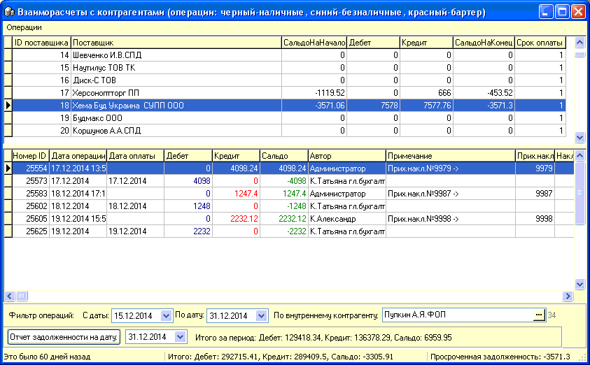

Форма "Взаиморасчеты с контрагентами"
предназначена для ведения учета взаиморасчетов с поставщиками и клиентами (с
которыми работа осуществляется через расходные накладные), внесения операций
прихода и расхода денег, контроля задолженности перед поставщиками,
формирования актов сверки и т.д.
Настройки отображения формы находятся на
вкладке "Взаиморасчеты/Касса" в настройках программы (см.соответствующий
раздел справки).
Окно данной формы состоит из двух частей: в
верхней части содержится список контрагентов (в виде списка или в виде дерева)
с отобранными оборотами взаиморасчетов, в нижней части - список операций за
указанный внизу формы период по выбранному контрагенту.

Под табличной частью операций и диапазоном дат
для отбора операций за указанный период и по выбранному внутреннему
контрагенту, находится строка с кнопкой "Отчет задолженности на дату:" -
нажатие выведет соответствующий отчет на предварительный просмотр печати, по
всем контрагентам. Строка "Итого за период:" отображает данные
дебета/кредита/сальдо по всем контрагентам за указанный выше период.
В строке состояния для подсказки
выводятся:
1. Срок давности выделенной операции - помогает
при контроле задолженности и общении с поставщиком.
2. Итого: Дебет/Кредит/Сальдо - суммарные
результаты по всем контрагентам за все время работы магазина.
3. Просроченная задолженности - таковая сумма по
выделенному поставщику, принимая во внимание значение столбца "Срок
оплаты" верхней табличной части (означает отсрочку оплаты, указана в
свойствах поставщика в его карточке в справочнике
контрагентов).
.
Во вложенных подразделах справки размещена
информация по работе с верхней и нижней табличными частями данной
формы.